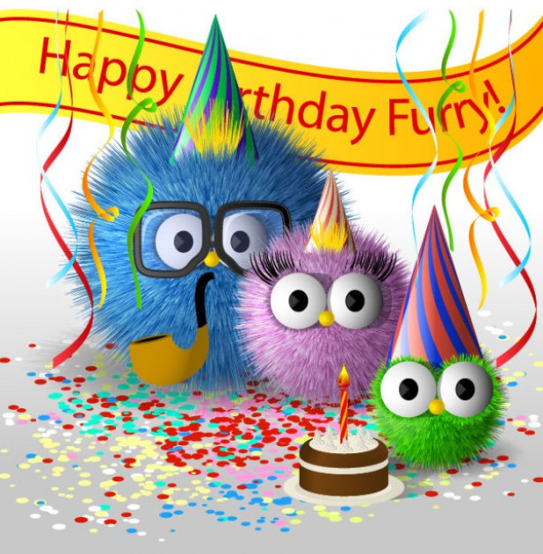

Kończysz 16, 18 a może wchodzisz w lepsze lata 30, 40, 50 - uwiecznij to.
- 
Urodziny są co roku ale to nie powód by znowu wyglądały tak samo!
Baw się na urodzinach razem z CrazyFocią dzięki przebraniom, animacji oraz szalonym zdjęciom!
Wczuj się w rytm najlepszych imprez i zaszalej na imprezie urodzinowej!
Robisz niespodziankę solenizantowi? Obchodzone są wyjątkowe lub okrągłe urodziny? Chcesz aby wyjątkowe urodziny w tym roku były dzięki Twojemu pomysłowi?. Zobacz jak łatwo możesz być oryginalny. Jesteśmy najnowocześniejszą fotobudką z Lublina i po tej stronie Wisły. Dzięki efektom specjalnym możemy zapewnić aby wymyślony przez Ciebie temat przewodni był idealnie zrealizowany. Zapewnimy właściwą oprawę wizualną i kostiumową. W końcu w tym roku te urodziny będą inne niż wszystkie dzięki CrazyFoci!
Zapraszamy do sprawdzenia naszych wolnych terminów gwarantujemy satysfakcję i prawdziwą pamiątkę z wyjątkowych tegorocznych urodzin!
CrazyFocia to fotobudka z Lublina, która uwielbia się bawić !
CrazyFocia Fotobudka na urodziny !
Zapewniamy zabawę jubilata i jego gości! Dzięki szalonym zdjęciom te urodziny będą inne niż wszystkie. Gwarantujemy Wam, że jeszcze przez wiele dni będziecie się wymieniać swoimi CrazyFociami. Rozkręcimy Waszą imprezę i naładujemy Was pozytywna energią na cały rok - do następnych urodzin!
Nie martwcie się o kasę, ilość zdjęć jest nieograniczona więc róbcie je do woli.
Gwarantujemy dyskrecje i poufność bo zdjęcia dostajecie tylko Wy i nikt inny, wydrukowane na miejscu, w kilka sekund!

Dlaczego Warto:
- Zdjęcia przygotowane graficznie pod motyw imprezy (m.in z datą i dedykacją)
- Gwarantowana Świetna Zabawa jubilata i gości!
- IDEALNE dla grup przyjaciół!
- Cykaj CrazyFocie Bez Limitu!
- Nasz Animator Zadba o To by Każde Zdjęcie Wyszło i Było Pamiątką
- Zdjęcia są w Kilka Sekund Wywołane - do ręki!
- Zakupiliśmy Dla Was Najnowocześniejszy Japoński Sprzęt
- Najnowocześniejszy w Polsce Sprzęt w CrazyFoci - Najmodniejszej Atrakcji Sezonu !
Dlaczego Jesteśmy Wyjątkowi i Najlepsi?
- Animator - W pakiecie CrazyFocia jest nie tylko sprzęt, ale budujący wesołą atmosferę animator, który zadba aby każda zdjęcie z urodzin wyszło i pozostało z Wami na długo. Animator zadba też by czas na jaki zostanie wynajęta CrazyFocia nie był marnowany i aby każdy miał szansę przynajmniej raz zaszaleć przed obiektywem.
- GreenSCREEN - każdy chociaż raz oglądając filmy akcji z niedowierzaniem oglądał jak sławni aktorzy i aktorki z Hollywoodzkich produkcji skaczą między pędzącymi pociągami o włos uciekają przed pędzącym pociągiem czy stoją w środku pożaru. Jak to możliwe? Dzięki technologii GreenSCREEN, każdy z Was będzie miał okazję samemu stać się bohaterem filmu akcji i przenieść się w obszar zagrożenia życia, ale nie tylko! Zrealizujemy i zapewnimy dowolny motyw Waszych urodzin!.
Zerknijcie na zdjęcia po lewej a przekonacie się jak działa GreenSCREEN z fotobudki CRAZYFOCIA - tylko z Lublina! :) - Chcesz aby każdy miał pamiątkę z urodzin? Fotobudka CrazyFocia to idealne narzędzie do zbudowania dobrego nastroju i uwiecznienia dorocznej crazy zabawy!
Wystarczy, że zadzwonicie by zrobić fantastyczny prezent dla jubilata na te wyjątkowe urodziny
- Sieci - Nasz zespół to TYLKO ludzie młodzi dlatego zapewniamy CrazyFocie w Waszej sieci. Umożliwiamy NA ŻYWO wysyłanie zdjęć gości przez internet
- Galeria On-Line - Zrobimy również On-Line galerię zdjęć z urodzin zabezpieczoną hasłem!
- Fotoalbum - Proszę bardzo. Do każdej imprezy fotobudka CrazyFocia za dodatkową opłatą oferuje fotoalbum pamiątkowy, bo taki album z wklejonymi zdjęciami uczestników urodzin i z ich dedykacjami jast super pamiątką - wszystko to NA ŻYWO!
- Branding Przygotujemy CrazyFocię tak, żeby z daleka widoczne były na niej zamówione przez Was grafiki.
Uff wizualnie po prostu nie da się więcej.
-
Pamiętajcie aby jak najszybciej rezerwujcie termin bo gdy będzie zajęty niestety nie pomogą prośby, będzie za późno!
Niech wszyscy albo tylko wybrani ją zobaczą!
Fotobudka CrazyFOCIA z Lublina - najlepszy prezent!
Planujesz urodziny lub oryginalny prezent?
Chcesz aby urodziny były niezapomniane i w dodatku z dobrej jakości foto pamiątkami z szalonej uroczystości? Te urodziny mogą być wspominane jeszcze bardzo długo wśród gości i przez jubilata. Spraw dzięki CrazyFoci, aby po tegorocznych urodzinach wszyscy pamiętali jak unikalny pomysłem było zaproszenie do zabawy CrazyFoci! Znajomi będą na biurkach trzymali najlepsze wspomnienia z urodzin w postaci CrazyFoć z naszej fotobudki. Zadzwoń do nas i sprawdź dostępność terminu! CrazyFocia - Fotobudka Lublin na urodziny!
Sprawimy, że urodziny z CrazyFocią będą "tą najlepszą" imprezą urodzinową dla jubilata i wielce szanownych gości.
Opcjonalnie: